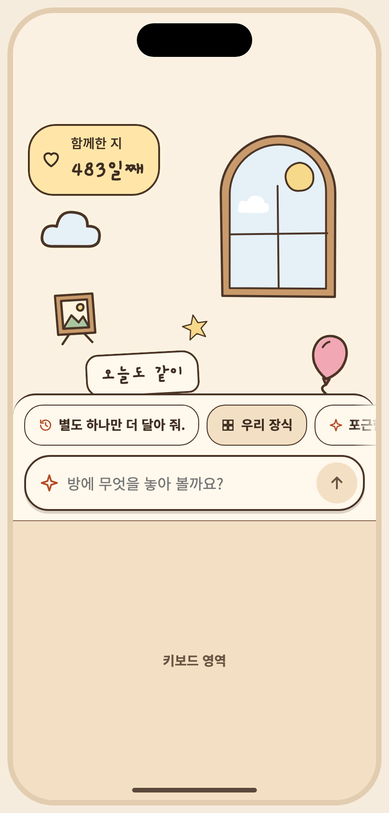
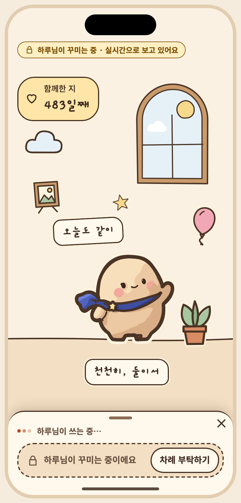
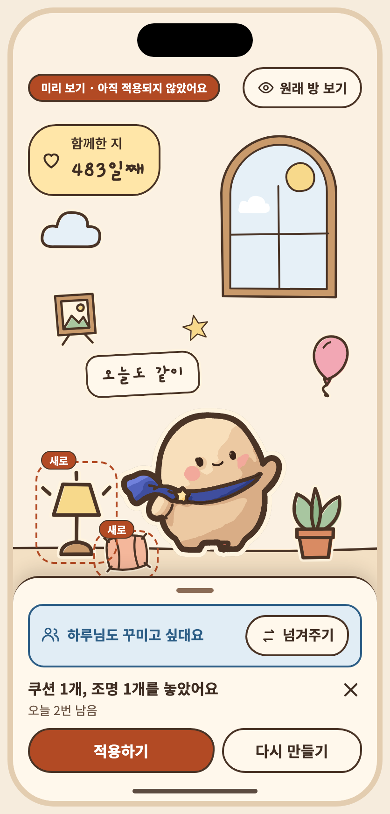
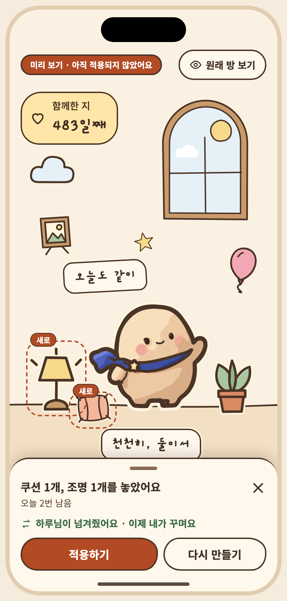
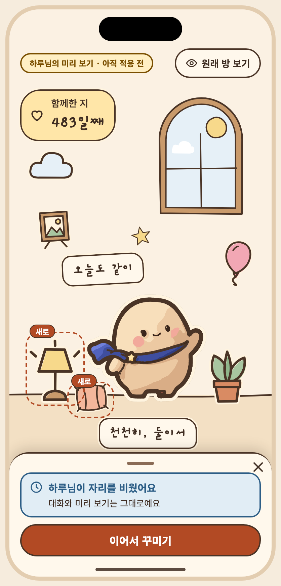
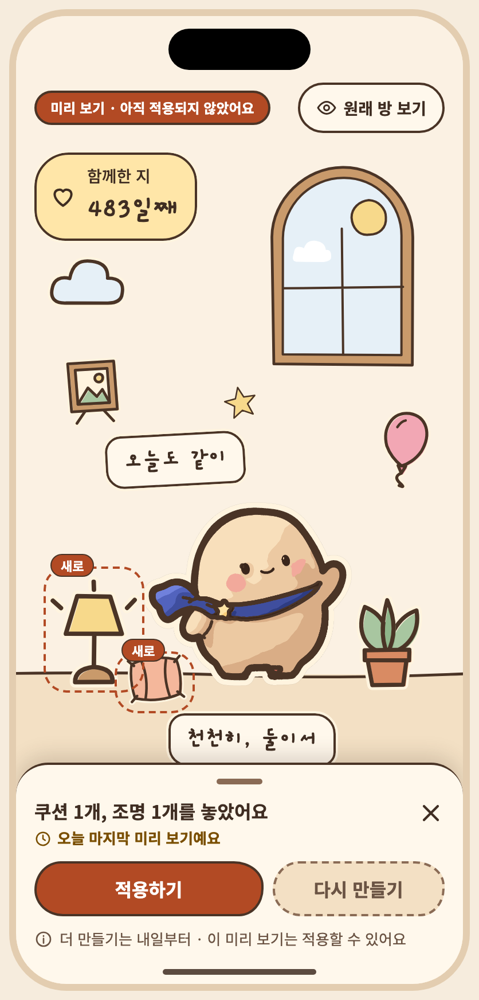

아티팩트 정본의 저장소 미러 · 버전 1794273208-8c73 · 생성 파일은 수정하지 마세요. 상태 명세와 PNG는 아티팩트에 비해 오래되었을 수 있습니다. 아티팩트








# S08 공유 프롬프트 대화 / 입력 승인자: 미승인 승인일: 미정 ## 목적, ID, 경로 ID: S08 Route: /prompt ## 디자인 원본 - [S08-prompt-session.dc.html](../../../canvas/project/S08-prompt-session.dc.html) ## 이미지 - [S08-gen-refused__ios-day-light-ko.png](../../../exports/S08-gen-refused__ios-day-light-ko.png) - [S08-library__ios-day-light-ko.png](../../../exports/S08-library__ios-day-light-ko.png) - [S08-quota__ios-day-light-ko.png](../../../exports/S08-quota__ios-day-light-ko.png) - [S08-mine__ios-day-light-ko.png](../../../exports/S08-mine__ios-day-light-ko.png) - [S08-free__ios-day-light-ko.png](../../../exports/S08-free__ios-day-light-ko.png) - [S08-partner-typing__ios-day-light-ko.png](../../../exports/S08-partner-typing__ios-day-light-ko.png) - [S08-nudge__ios-day-light-ko.png](../../../exports/S08-nudge__ios-day-light-ko.png) - [S08-handover__ios-day-light-ko.png](../../../exports/S08-handover__ios-day-light-ko.png) - [S08-takeover__ios-day-light-ko.png](../../../exports/S08-takeover__ios-day-light-ko.png) - [S08-quota-last__ios-day-light-ko.png](../../../exports/S08-quota-last__ios-day-light-ko.png) ## 상태와 상호작용 > **2026-11-10 · 꾸미기 독으로 바뀌었어요.** 아래 설명과 상태 표의 일부는 2026-10 설계(꾸미기 시트 · 적용 확인 화면) 기준으로 남아 있어요. 지금 흐름은 방 아래 작은 독 + 방 위 미리 보기이고, 오너가 2026-11-10에 정한 규칙은 ① 적용 직후 방 위 ‘적용했어요 · 되돌리기’ 한 줄(한 단계 · 다시 적용 없음 · 다음 요청, 방 탭을 떠날 때, 3분 유휴에 끝남) ② 차례 부탁하기 · 넘겨주기 ③ 독의 ‘오늘 n번 남음’이에요. 현재 상태 목록은 캔버스 보드를, 규칙은 [interaction notes](../../../interaction-notes.md) §4–§6 · §9 · §14와 [spec](../../../../specs/001-couple-prompt-todo/spec.md)의 FR-011 · FR-013 · FR-028 · FR-030 · FR-031을 따르세요. 위 이미지는 현재 보드에서 다시 뽑았어요. - **캔버스 보드**: `S08-prompt-session` - **목적**: 공유 대화와 미리 보기, 점유 상태 6가지(비어 있음 / 내가 점유 / 상대가 점유(쓰는 중·만드는 중) / 내 점유 만료 임박 / 내 점유 만료 / 상대 만료 후 이어받기), 이어받기 경합, 동의 필요, 하루 3회 소진, 오프라인, 미지원 요청, 브랜드 요청 거절, 실패·재시도, 키보드. - **이동**: 방 탭의 꾸미기 → 모달 시트. 비어 있을 때 "내가 꾸밀게요"로 점유. 닫기 → 방. - 점유는 자동이 아니라 "내가 꾸밀게요"로 시작해요(상대가 의도치 않게 막히는 것 방지). 3분(가정) 입력이 없으면 풀리고 쓰던 글은 남아요. - 상대는 대화·미리 보기를 실시간 읽기 전용으로 봐요. 입력칸은 잠금 아이콘과 이유를 보여요. - AI 배지는 두지 않았어요(스펙). 결과 카드는 "제안"으로 말해요. - 탭 바는 모달 시트가 덮어요. - **긴 문구·언어 사례**: 점유 표시 칩은 두 줄 헤더(제목 + 칩)로 둬서 영어·일본어 이름이 길어도 줄바꿈되지 않아요. | 상태 ID | 설명 | 사용하는 키 | 그린 조합 | |---|---|---|---| | `S08-free` | 비어 있음 (아무도 점유 안 함) · 내가 꾸밀게요 | `prompt.msg.status.released` `prompt.msg.me` `prompt.msg.time` `prompt.msg.result` `prompt.start` `prompt.start.help` `a11y.pose.wave_main` `a11y.mascot` `date.since` `a11y.dday` `dday.eyebrow` `dday.count` `prompt.title` `prompt.free` `a11y.presence` | iOS·낮·밝게·ko, Android·밤·어둡게·ko, iOS·낮·밝게·ko·200%, Android·밤·어둡게·ja·200% | | `S08-empty` | 비어 있음 · 대화 없음(처음) | `prompt.history.empty` `prompt.start` `prompt.start.help` `a11y.pose.wave_main` `a11y.mascot` `date.since` `a11y.dday` `dday.eyebrow` `dday.count` `prompt.title` `prompt.free` `a11y.presence` | iOS·낮·밝게·ko, Android·밤·어둡게·ko | | `S08-mine` | 내가 점유 · 입력 가능 | `prompt.msg.me` `prompt.msg.time` `prompt.msg.result` `prompt.placeholder` `a11y.input` `a11y.send` `prompt.left` `prompt.idleHint` `a11y.pose.wave_main` `a11y.mascot` `date.since` `a11y.dday` `dday.eyebrow` `dday.count` `prompt.title` `prompt.mine` `a11y.presence` | iOS·낮·밝게·ko, Android·밤·어둡게·ko, iOS·낮·밝게·en, Android·밤·어둡게·ja 외 3 | | `S08-kbd` | 내가 점유 · 키보드 입력 중 (탭 바·도구 막대를 가리지 않는 모달) | `prompt.msg.result` `prompt.msg.me` `prompt.placeholder` `a11y.input` `a11y.send` `prompt.left` `prompt.idleHint` `a11y.pose.wave_main` `a11y.mascot` `date.since` `a11y.dday` `dday.eyebrow` `dday.count` `prompt.title` `prompt.mine` `a11y.presence` `prompt.kbd` | iOS·낮·밝게·ko, Android·밤·어둡게·ko | | `S08-sending` | 제출 중 · 입력 잠김 | `prompt.msg.me` `prompt.msg.time` `prompt.sending` `sample.partner` `prompt.input.partner` `a11y.input.ro` `a11y.send` `a11y.pose.wave_main` `a11y.mascot` `date.since` `a11y.dday` `dday.eyebrow` `dday.count` `prompt.title` `prompt.mine` `a11y.presence` | iOS·낮·밝게·ko, Android·밤·어둡게·ko | | `S08-partner-typing` | 상대 점유 · 쓰는 중 (읽기 전용 실시간) | `prompt.msg.me` `prompt.msg.time` `sample.partner` `prompt.msg.partner` `prompt.partner.typing` `prompt.input.partner` `a11y.input.ro` `a11y.send` `a11y.pose.wave_main` `a11y.mascot` `date.since` `a11y.dday` `dday.eyebrow` `dday.count` `prompt.title` `prompt.partner` `a11y.presence` | iOS·낮·밝게·ko, Android·밤·어둡게·ko, iOS·낮·밝게·en, Android·밤·어둡게·ja | | `S08-partner-working` | 상대 점유 · 미리 보기 만드는 중 | `sample.partner` `prompt.msg.partner` `prompt.msg.time` `prompt.partner.thinking` `prompt.input.partner` `a11y.input.ro` `a11y.send` `a11y.pose.wave_main` `a11y.mascot` `date.since` `a11y.dday` `dday.eyebrow` `dday.count` `prompt.title` `prompt.partner` `a11y.presence` | iOS·낮·밝게·ko, Android·밤·어둡게·ko | | `S08-expiring` | 내 점유 · 만료 임박 (30초 전) | `prompt.msg.me` `prompt.msg.time` `prompt.msg.result` `prompt.expiring` `prompt.expiring.action` `prompt.placeholder` `a11y.input` `a11y.send` `prompt.left` `prompt.idleHint` `a11y.pose.wave_main` `a11y.mascot` `date.since` `a11y.dday` `dday.eyebrow` `dday.count` `prompt.title` `prompt.mine` `a11y.presence` | iOS·낮·밝게·ko, Android·밤·어둡게·ko | | `S08-idle` | 내 점유 · 유휴로 해제됨 (쓰던 글 남음) | `prompt.msg.me` `prompt.msg.time` `prompt.msg.result` `prompt.idle.me.title` `prompt.idle.me.body` `prompt.placeholder` `a11y.input` `a11y.send` `prompt.idle.me.action` `a11y.pose.wave_main` `a11y.mascot` `date.since` `a11y.dday` `dday.eyebrow` `dday.count` `prompt.title` `prompt.free` `a11y.presence` | iOS·낮·밝게·ko, Android·밤·어둡게·ko | | `S08-takeover` | 상대 유휴 만료 · 이어받기 (이전 미리 보기 유지) | `preview.badge` `prompt.msg.me` `prompt.msg.time` `prompt.msg.result` `prompt.msg.status.preview` `sample.partner` `prompt.takeover.title` `prompt.takeover.body` `prompt.takeover.action` `a11y.pose.wave_main` `a11y.mascot` `date.since` `a11y.dday` `dday.eyebrow` `dday.count` `prompt.title` `prompt.free` `a11y.presence` | iOS·낮·밝게·ko, Android·밤·어둡게·ko, iOS·낮·밝게·en, Android·밤·어둡게·ja | | `S08-takeover-lost` | 이어받기 경합 · 상대가 먼저 | `preview.badge` `prompt.msg.me` `prompt.msg.time` `prompt.msg.result` `prompt.msg.status.preview` `sample.partner` `prompt.input.partner` `a11y.input.ro` `a11y.send` `a11y.pose.wave_main` `a11y.mascot` `date.since` `a11y.dday` `dday.eyebrow` `dday.count` `prompt.title` `prompt.partner` `a11y.presence` `prompt.takeover.lost` | iOS·낮·밝게·ko, Android·밤·어둡게·ko | | `S08-consent` | 동의 필요 · 입력 막힘 | `prompt.consent.need` `prompt.consent.action` `a11y.input` `a11y.send` `a11y.pose.wave_main` `a11y.mascot` `date.since` `a11y.dday` `dday.eyebrow` `dday.count` `prompt.title` `prompt.mine` `a11y.presence` | iOS·낮·밝게·ko, Android·밤·어둡게·ko | | `S08-quota` | 하루 3회 소진 | `prompt.msg.me` `prompt.msg.time` `prompt.msg.result` `prompt.quota.title` `prompt.quota.body` `a11y.input` `a11y.send` `a11y.pose.wave_main` `a11y.mascot` `date.since` `a11y.dday` `dday.eyebrow` `dday.count` `prompt.title` `prompt.mine` `a11y.presence` | iOS·낮·밝게·ko, Android·밤·어둡게·ko | | `S08-offline` | 오프라인 · 온라인 전용 | `prompt.msg.me` `prompt.msg.time` `prompt.msg.result` `main.offline.title` `prompt.offline` `a11y.input` `a11y.send` `a11y.pose.wave_main` `a11y.mascot` `date.since` `a11y.dday` `dday.eyebrow` `dday.count` `prompt.title` `prompt.mine` `a11y.presence` | iOS·낮·밝게·ko, Android·밤·어둡게·ko | | `S08-unsupported` | 지원하지 않는 요청 | `prompt.unsupported.title` `prompt.unsupported.body` `prompt.placeholder` `a11y.input` `a11y.send` `prompt.left` `prompt.idleHint` `a11y.pose.wave_main` `a11y.mascot` `date.since` `a11y.dday` `dday.eyebrow` `dday.count` `prompt.title` `prompt.mine` `a11y.presence` | iOS·낮·밝게·ko, Android·밤·어둡게·ko | | `S08-brand` | 기존 캐릭터·브랜드 요청 거절 | `prompt.brand.refuse` `prompt.brand.action` `prompt.placeholder` `a11y.input` `a11y.send` `prompt.left` `prompt.idleHint` `a11y.pose.wave_main` `a11y.mascot` `date.since` `a11y.dday` `dday.eyebrow` `dday.count` `prompt.title` `prompt.mine` `a11y.presence` | iOS·낮·밝게·ko, Android·밤·어둡게·ko | | `S08-fail` | 실패 · 재시도 | `prompt.msg.me` `prompt.msg.time` `prompt.fail.title` `prompt.fail.body` `common.retry` `prompt.placeholder` `a11y.input` `a11y.send` `prompt.left` `prompt.idleHint` `a11y.pose.wave_main` `a11y.mascot` `date.since` `a11y.dday` `dday.eyebrow` `dday.count` `prompt.title` `prompt.mine` `a11y.presence` | iOS·낮·밝게·ko, Android·밤·어둡게·ko | | `S08-gen-refused` | 생성 요청 거절 · 저작권·브랜드 (이유 + 대안 + 횟수 안 씀) | `gen.refuse.title` `gen.refuse.ip` `gen.refuse.note` `gen.refuse.action` `prompt.placeholder` `a11y.input` `a11y.send` `prompt.left` `prompt.idleHint` `a11y.pose.wave_main` `a11y.mascot` `date.since` `a11y.dday` `dday.eyebrow` `dday.count` `prompt.title` `prompt.mine` `a11y.presence` | iOS·낮·밝게·ko, Android·밤·어둡게·ko, iOS·낮·밝게·en, Android·밤·어둡게·ja 외 2 | | `S08-gen-refused-purpose` | 생성 요청 거절 · 배경·말풍선 밖의 목적(마스코트·캐릭터·소품) | `gen.refuse.title` `gen.refuse.purpose` `gen.refuse.note` `gen.refuse.action` `prompt.placeholder` `a11y.input` `a11y.send` `prompt.left` `prompt.idleHint` `a11y.pose.wave_main` `a11y.mascot` `date.since` `a11y.dday` `dday.eyebrow` `dday.count` `prompt.title` `prompt.mine` `a11y.presence` | iOS·낮·밝게·ko, Android·밤·어둡게·ko, iOS·낮·밝게·en, Android·밤·어둡게·ja | | `S08-gen-failed` | 생성 실패 · 재시도 1회 뒤에도 안 됨 (횟수 안 씀) | `prompt.msg.time` `gen.fail.title` `gen.fail.body` `common.retry` `prompt.placeholder` `a11y.input` `a11y.send` `prompt.left` `prompt.idleHint` `a11y.pose.wave_main` `a11y.mascot` `date.since` `a11y.dday` `dday.eyebrow` `dday.count` `prompt.title` `prompt.mine` `a11y.presence` | iOS·낮·밝게·ko, Android·밤·어둡게·ko | | `S08-gen-disabled` | 새 장식 만들기 잠시 중단 (킬 스위치, 다른 꾸미기는 계속) | `gen.disabled.title` `gen.disabled.body` `sample.partner` `prompt.input.partner` `a11y.input.ro` `a11y.send` `a11y.pose.wave_main` `a11y.mascot` `date.since` `a11y.dday` `dday.eyebrow` `dday.count` `prompt.title` `prompt.mine` `a11y.presence` | iOS·낮·밝게·ko, Android·밤·어둡게·ko | | `S08-library` | 우리 장식 보관함 (다시 쓰기 · 지우기 · 방에 놓인 장식도 지울 수 있음) | `prompt.placeholder` `a11y.input` `a11y.send` `prompt.left` `prompt.idleHint` `a11y.pose.wave_main` `a11y.mascot` `date.since` `a11y.dday` `dday.eyebrow` `dday.count` `prompt.title` `prompt.mine` `a11y.presence` `gen.lib.title` `gen.lib.count` `gen.lib.byMe` `gen.lib.use` `gen.lib.delete` `sample.partner` `gen.lib.by` `gen.lib.delete.inuse` | iOS·낮·밝게·ko, Android·밤·어둡게·ko, iOS·낮·밝게·en, Android·밤·어둡게·ja | | `S08-library-full` | 보관함이 가득 참 (설정값 상한) · 모델 호출 전에 막음 | `prompt.msg.time` `gen.lib.count` `gen.lib.title` `gen.lib.full` `prompt.placeholder` `a11y.input` `a11y.send` `prompt.left` `prompt.idleHint` `a11y.pose.wave_main` `a11y.mascot` `date.since` `a11y.dday` `dday.eyebrow` `dday.count` `prompt.title` `prompt.mine` `a11y.presence` | iOS·낮·밝게·ko, Android·밤·어둡게·ko | | `S08-library-delete` | 장식 지우기 확인 | `prompt.placeholder` `a11y.input` `a11y.send` `prompt.left` `prompt.idleHint` `a11y.pose.wave_main` `a11y.mascot` `date.since` `a11y.dday` `dday.eyebrow` `dday.count` `prompt.title` `prompt.mine` `a11y.presence` `gen.lib.delete.title` `gen.lib.delete.body` `gen.lib.delete.inuse` `gen.lib.delete.confirm` `common.cancel` | iOS·낮·밝게·ko, Android·밤·어둡게·ko | ## 이동 및 뒤로 F03: S07 → S08 → S09 → 적용 후 S07; S09 → S10 → 이전 미리보기; 필요 시 S12 동의. 뒤로: 대화/시트 또는 확인을 닫고 이전 단계로. 취소 시 방은 유지. ## 접근성 상태 표에 나열된 `a11y.*` 키를 스크린 리더 이름으로 사용합니다. 공통 접근성 및 200% 글자 규칙은 [interaction notes](../../../interaction-notes.md#10-접근성-상호작용)를 참조하세요. TODO: 해당 상태에 명시되지 않은 역할과 이름을 확인하세요. ## 수락 시나리오 - [ ] S08-AC-01: 상대가 점유 중이면 대화를 읽기 전용으로 표시한다. ## 열린 질문 / 추적 TODO: 명세에 없는 disabled/offline 상태의 적용 여부와 정확한 뒤로 대상을 확인하세요. 시나리오와 요구사항·테스트·실행 결과는 [추적표](../../traceability.md)에 연결하세요.
| Key | 한국어 | English · draft G4 | 日本語 · draft G4 |
|---|---|---|---|
| a11y.dday | 함께한 지 {n}일째, 2025년 6월 29일부터 | Day {n} together, since June 29, 2025 | 一緒に過ごして{n}日目、2025年6月29日から |
| a11y.input | 꾸미기 요청 입력칸 | Decorating request field | 飾り付けリクエストの入力欄 |
| a11y.input.ro | {name}님이 꾸미는 중이라 입력할 수 없어요 | Can't type: {name} is decorating | 入力できません：{name}さんが飾っています |
| a11y.mascot | 아루미, {pose} | Aroomi, {pose} | アルーミ、{pose} |
| a11y.pose.wave_main | 인사하고 있어요 | waving | 手を振っています |
| a11y.presence | 꾸미기 상태: {state} | Decorating status: {state} | 飾り付けの状態：{state} |
| a11y.send | 요청 보내기 | Send request | リクエストを送信 |
| chat.close | 꾸미기 대화 닫기 | Close the decorating chat | 飾り付けの会話を閉じる |
| chat.count.none | 더 만들기는 내일부터 · 이 미리 보기는 적용할 수 있어요 | More previews tomorrow · you can still apply this one | 次に作れるのは明日から・このプレビューは反映できます |
| chat.dock | 함께 꾸미기 | Decorate together | いっしょに飾る |
| chat.history.open | 지난 대화 펼치기 | Show earlier messages | これまでの会話を広げる |
| chat.history.title | 이번 대화 | This chat | この会話 |
| chat.nudge.ask | 차례 부탁하기 | Ask for a turn | 順番をお願いする |
| chat.nudge.give | 넘겨주기 | Hand over | 交代する |
| chat.nudge.given | {name}님이 넘겨줬어요 · 이제 내가 꾸며요 | {name} handed it over · it's your turn | {name}さんが交代しました・あなたの番です |
| chat.nudge.got | {name}님도 꾸미고 싶대요 | {name} wants to decorate too | {name}さんも飾りたいそうです |
| chat.nudge.sent | {name}님에게 알렸어요 | We let {name} know | {name}さんに伝えました |
| chat.preview.current | 지금 보는 미리 보기 | Preview on screen | 表示中のプレビュー |
| chat.preview.older | 이전 미리 보기 | Earlier preview | 前のプレビュー |
| chat.preview.reuse | 이걸로 다시 보기 | Show this one again | これをもう一度表示 |
| chat.start.help | 보내면 내가 꾸미는 동안 {name}님은 지켜봐요 | Once you send, {name} watches while you decorate | 送信すると、飾っている間{name}さんは見守ります |
| chat.write | 직접 말하기 | Type my own | 自分で書く |
| common.cancel | 취소 | Cancel | キャンセル |
| common.retry | 다시 시도 | Try again | もう一度試す |
| date.since | 2025년 6월 29일부터 | since June 29, 2025 | 2025年6月29日から |
| dday.count | {n}일째 | Day {n} | {n}日目 |
| dday.eyebrow | 함께한 지 | Together | 一緒に過ごして |
| gen.alt.ip | 노란 별 무늬 벽 장식 만들기 | Make a yellow star-pattern wall decoration | 黄色い星柄の壁飾りを作る |
| gen.alt.purpose | 벽 아래 물결 띠 만들기 | Make a wave strip under the wall | 壁の下に波のラインを作る |
| gen.disabled.body | 다른 꾸미기는 그대로 쓸 수 있어요 | Other decorating still works | ほかの飾り付けはそのまま使えます |
| gen.disabled.title | 새 장식 만들기를 잠시 쉬어요 | New decorations are taking a break | 新しい飾り作りはお休み中です |
| gen.fail.body | 방도 횟수도 그대로예요 | Your room and tries are unchanged | 部屋も回数もそのままです |
| gen.fail.title | 이번에는 만들지 못했어요 | We couldn't make it this time | 今回は作れませんでした |
| gen.lib.by | {name}님이 만들었어요 | Made by {name} | {name}さんが作りました |
| gen.lib.byMe | 내가 만들었어요 | Made by you | あなたが作りました |
| gen.lib.chip | ‘{label}’ 놓기 | Place "{label}" | 「{label}」を置く |
| gen.lib.chip.remove | ‘{label}’ 빼기 | Remove "{label}" | 「{label}」を外す |
| gen.lib.close | 우리 장식 닫기 | Close our decorations | ふたりの飾りを閉じる |
| gen.lib.count | {n}/{max} | {n}/{max} | {n}/{max} |
| gen.lib.delete | 지우기 | Delete | 削除 |
| gen.lib.delete.body | 보관함에서 지우면 다시 찾을 수 없어요. | It will be gone from your collection and can't be brought back. | コレクションから消えて、元に戻せません。 |
| gen.lib.delete.confirm | 지우기 | Delete | 削除する |
| gen.lib.delete.inuse | 지금 방에 놓여 있어요. 지우면 방에서도 사라져요. | It's in the room right now. Deleting it removes it from the room too. | いま部屋に置かれています。削除すると部屋からも消えます。 |
| gen.lib.delete.title | 이 장식을 지울까요? | Delete this decoration? | この飾りを削除しますか？ |
| gen.lib.empty | 아직 만든 장식이 없어요. 꾸미기에서 '벽 장식을 만들어 줘'처럼 말해 보세요. | No decorations yet. Try asking, like "make me a wall decoration." | まだ飾りがありません。「壁の飾りを作って」のように話しかけてみてください。 |
| gen.lib.full | 보관함이 가득 찼어요. 쓰지 않는 장식을 지워 주세요. | Your collection is full. Please delete decorations you don't use. | コレクションがいっぱいです。使っていない飾りを削除してください。 |
| gen.lib.title | 우리 장식 | Our decorations | ふたりの飾り |
| gen.lib.use | 다시 쓰기 | Use again | もう一度使う |
| gen.refuse.ip | 이미 있는 캐릭터·브랜드·로고나 다른 사람의 작품을 닮은 그림은 만들 수 없어요. 저작권 문제가 생길 수 있어서예요. 대신 '연한 노란 별 무늬 벽 장식'처럼 모양과 색으로 말해 주세요. | We can't make art that copies existing characters, brands, logos or someone else's work, because it could cause copyright problems. Try describing shapes and colors instead, like "a wall piece with soft yellow stars." | 既存のキャラクター・ブランド・ロゴ、他の人の作品に似た絵は作れません。著作権の問題になるおそれがあるためです。「やわらかな黄色い星柄の壁飾り」のように、形と色で伝えてみてください。 |
| gen.refuse.note | 오늘 횟수는 그대로예요 | Today's tries are unchanged | 今日の回数はそのままです |
| gen.refuse.people | 실제 사람이나 유명인이 나오는 그림은 만들 수 없어요. 대신 '구름 사이로 달이 보이는 창밖 풍경'처럼 풍경이나 무늬로 말해 주세요. | We can't make pictures of real people or celebrities. Try a scene or pattern instead, like "a window view with the moon between clouds." | 実在の人物や有名人の絵は作れません。「雲の間に月が見える窓の外の景色」のように、風景や模様で伝えてみてください。 |
| gen.refuse.personal | 전화번호, 주소, 링크, QR 코드나 글자가 많은 그림은 만들 수 없어요. 글자는 방의 짧은 문구로 따로 넣을 수 있어요. | We can't make pictures with phone numbers, addresses, links, QR codes or lots of text. You can add short text to the room separately. | 電話番号・住所・リンク・QRコード・文字の多い絵は作れません。文字は部屋の短い文として別に入れられます。 |
| gen.refuse.photo | 사진처럼 실제 같은 이미지는 만들 수 없어요. 아루미의 세계처럼 부드러운 손그림 느낌으로 말해 주세요. | We can't make realistic, photo-like images. Describe something soft and hand-drawn, like Aroomi's world. | 写真のようにリアルな画像は作れません。アルーミの世界のような、やわらかな手描き風で伝えてみてください。 |
| gen.refuse.purpose | 배경, 말풍선, 작은 방 소품 장식만 만들 수 있어요. 캐릭터는 만들 수 없고, 아루미는 바꿀 수 없어요. '벽 아래 물결 띠'나 '동그란 쿠션'처럼 말해 주세요. | We can only make backgrounds, speech-bubble frames and small room props. We can't make characters, and Aroomi can't be changed. Try something like "a wavy band along the wall" or "a round cushion." | 作れるのは背景、吹き出しの飾り、小さな部屋の小物だけです。キャラクターは作れず、アルーミも変えられません。「壁の下の波模様の帯」や「丸いクッション」のように伝えてみてください。 |
| gen.refuse.purpose.title | 아루미는 바꿀 수 없어요 | Aroomi can't be changed | アルーミは変えられません |
| gen.refuse.title | 이 장식은 만들 수 없어요 | We can't make that decoration | その飾りは作れません |
| gen.refuse.unsafe | 성적이거나 폭력적이거나 누군가를 해치거나 차별하는 내용은 만들 수 없어요. 포근한 분위기의 장식으로 다시 말해 주세요. | We can't make anything sexual, violent, hateful or harmful. Try describing something cozy instead. | 性的・暴力的・差別的な内容や、誰かを傷つける内容は作れません。ほっとするような飾りで言い直してみてください。 |
| gen.refuse.why | 왜 안 되나요? | Why not? | なぜだめなの？ |
| main.offline.title | 인터넷에 연결되어 있지 않아요 | You're offline | インターネットに接続されていません |
| preview.badge | 미리 보기 · 아직 적용되지 않았어요 | Preview · not applied yet | プレビュー · まだ反映されていません |
| prompt.brand.action | 비슷한 소품으로 만들기 | Make a similar item | 似た小物で作る |
| prompt.brand.refuse | 캐릭터나 브랜드는 넣을 수 없어요 | Characters and brands can't be added | キャラクターやブランドは入れられません |
| prompt.expiring.action | 계속하기 | Keep going | 続ける |
| prompt.fail.body | 방도 횟수도 그대로예요 | Your room and tries are unchanged | 部屋も回数もそのままです |
| prompt.fail.title | 이번엔 만들지 못했어요 | Couldn't make it this time | 今回は作れませんでした |
| prompt.free | 지금은 아무도 꾸미고 있지 않아요 | No one is decorating right now | 今は誰も飾っていません |
| prompt.idle.me.body | 쓰던 글은 남아 있어요 | What you typed is still here | 書いていた文は残っています |
| prompt.idle.me.title | 꾸미기가 풀렸어요 | Decorating was released | 飾り付けが解除されました |
| prompt.input.partner | {name}님이 꾸미는 중이라 지금은 쓸 수 없어요 | {name} is decorating, so you can't type right now | {name}さんが飾っているため、今は入力できません |
| prompt.kbd | 키보드 영역 | Keyboard area | キーボード領域 |
| prompt.mine | 내가 꾸미는 중 | You're decorating | あなたが飾っています |
| prompt.msg.me | 분위기를 조금 포근하게 바꿔 줘. 쿠션이랑 조명을 놓고 싶어. | Make it a bit cozier. I'd like a cushion and a lamp. | もう少し温かい雰囲気にして。クッションとランプを置きたい。 |
| prompt.msg.partner | 별도 하나만 더 달아 줘. | Add one more star too. | 星ももうひとつ付けて。 |
| prompt.msg.result | 쿠션 1개, 조명 1개를 놓았어요 | I added 1 cushion and 1 lamp | クッションを1個、ランプを1個置きました |
| prompt.msg.status.released | 꾸미기가 풀렸어요 | Decorating was released | 飾る権限が解除されました |
| prompt.msg.time | 오후 9:14 | 9:14 PM | 21:14 |
| prompt.offline | 인터넷에 연결되어야 꾸밀 수 있어요 | You need an internet connection to decorate | 飾るにはインターネット接続が必要です |
| prompt.partner | {name}님이 꾸미는 중 | {name} is decorating | {name}さんが飾っています |
| prompt.partner.typing | {name}님이 쓰는 중… | {name} is typing… | {name}さんが入力中… |
| prompt.placeholder | 어떻게 꾸미고 싶나요? | How would you like to decorate? | どんな部屋にしたいですか？ |
| prompt.quota.body | 하루 3번까지 쓸 수 있어요. 만들어지지 못했거나 거절된 요청은 세지 않아요. 내일 다시 이어서 꾸밀 수 있고, 지금 방은 그대로예요. | You can decorate up to 3 times a day. Requests that fail or are declined don't count. Pick it up again tomorrow — the room stays as it is. | 1日3回まで使えます。作れなかったリクエストや断られたリクエストは数えません。明日また続けられます。今の部屋はそのままです。 |
| prompt.quota.title | 오늘 꾸미기를 모두 썼어요 | You've used all of today's tries | 今日の回数を使い切りました |
| prompt.send | 보내기 | Send | 送信 |
| prompt.takeover.action | 이어서 꾸미기 | Take over | 引き継ぐ |
| prompt.takeover.body | 대화와 미리 보기는 그대로예요 | The chat and preview stay as they are | 会話とプレビューはそのままです |
| prompt.takeover.lost | {name}님이 먼저 이어받았어요 | {name} took over first | {name}さんが先に引き継ぎました |
| prompt.takeover.title | {name}님이 자리를 비웠어요 | {name} seems to be away | {name}さんは席を外しているようです |
| prompt.title | 함께 꾸미기 | Decorate together | いっしょに飾る |
| prompt.unsupported.body | 소품과 문구로 할 수 있는 걸 골라 보세요 | Pick something you can do with items and text | 小物と文字でできることを選んでください |
| prompt.unsupported.title | 이건 꾸미기로 할 수 없어요 | That can't be done by decorating | これは飾り付けではできません |
| sample.partner | 하루 | Haru | ハル |